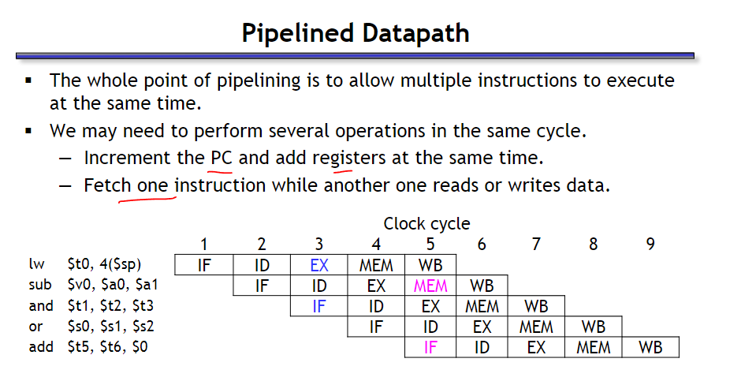
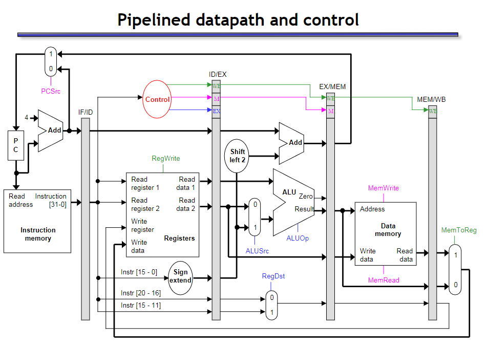

EECS151_Project_check1
EECS 151
Intro
Hey! In 2024 spring, I am taking EECS 151/251A: Introduction to Digital Design and Integrated Circuits and the ASIC lab of this course. You can get more info of labs from here. And click here to get project details.

This lab is very challenging if you are not Berkeley undergrad (or even their own undergrads would feel troublesome because the heavy workload…). The lab stage includes FIFO design based on skywater130, parallel optimization by adding arbiter, and SRAM design and layout optimization. After labs, the project is to tackle with the 3-stages RISC-V CPU design, which requires a lot of effort and a lot of time, especially if you are unfamiliar with the RISC-V instructions and Verilog codes.
(Last edited on 03/19/2024)
I will continue to update the relevant content of the EECS151 project until the end of the project. If you have any questions or suggestions, you can contact me via email or comments~
Stage1: Pipeline diagram and ALU design
Pipeline diagram:
About pipeline diagram, we need to achieve a 3-stage RISCV, but typically 5- stage is common. It’s easy to think when you have IF, ID, EX, MEM, WB parallel in one cycle, just like this diagram shown:


From diagram you can observe, for example, it’s easy to obtain one cycle when you just take one opeation in one period.(Maybe not easy XD.. I mean it’s easy to understand but hard to design or draw without reference)
But for mutli-stage pipeline, when you need to take 3~5 operations in one period, essentially we set control unit to assign instructions for each period.

It’s really important to focus on signal path and data path, as well as the clock for each stage. Considering period, it’s necessary to set mux in this problem to set critical path/minimum frequency. Sometimes we will ignore mux in that typically we design 5-stage pipeline, in that case, we can just give mux between each stage. However, for this project, if you want to design 3-stage, which means only 2 mux can be added, it is necessary to merge some stages.
For me and my partner Timmy(senior, Chinese American from taiwan), our idea is just as follows. First we find a 5-stage reference, and consider which stage can be eliminated or merged. For mux, in this project checkoff you need to point out FFs and Regs specifically, really a heavy workload, right? In other cases I think simple mux should be fine.

ALU To do:
In this section, you will be designing and testing an ALU for later use in the semester. A header file containing define statements for operations (ALUop.vh) is provided inside the src directory of this lab. This file has already been included in an ALU template given to you in the same folder (ALU.v), but you may need to modify the include statement to match the correct path of the header file. Compare ALUop input of your ALU to the define statements inside the header file to select the function ALU is currently running. For ADD and SUB, treat the operands as unsigned integers and ignore overflow in the result. Definition of the functions is given below:
| Op Code | Definition |
|---|---|
| ADD | Add A and B |
| SUB | Subtract B from A |
| AND | Bitwise and A and B |
| OR | Bitwise or A and B |
| XOR | Bitwise xor A and B |
| SLT | Perform a signed comparison, Out=1 if A < B |
| SLTU | Perform an unsigned comparison, Out = 1 if A < B |
| SLL | Logical shift left A by an amount indicated by B[4:0] |
| SRA | Arithmetic shift right A by an amount indicated by B[4:0] |
| SRL | Logical shift right A by an amount indicated by B[4:0] |
| COPY_B | Output is equal to B |
| XXX | Output is 0 |
Given these definitions, complete ALU.v and write a testbench tb ALU.v that checks all these operations with random inputs at least a 100 times per operation and outputs a PASS/FAIL indicator.